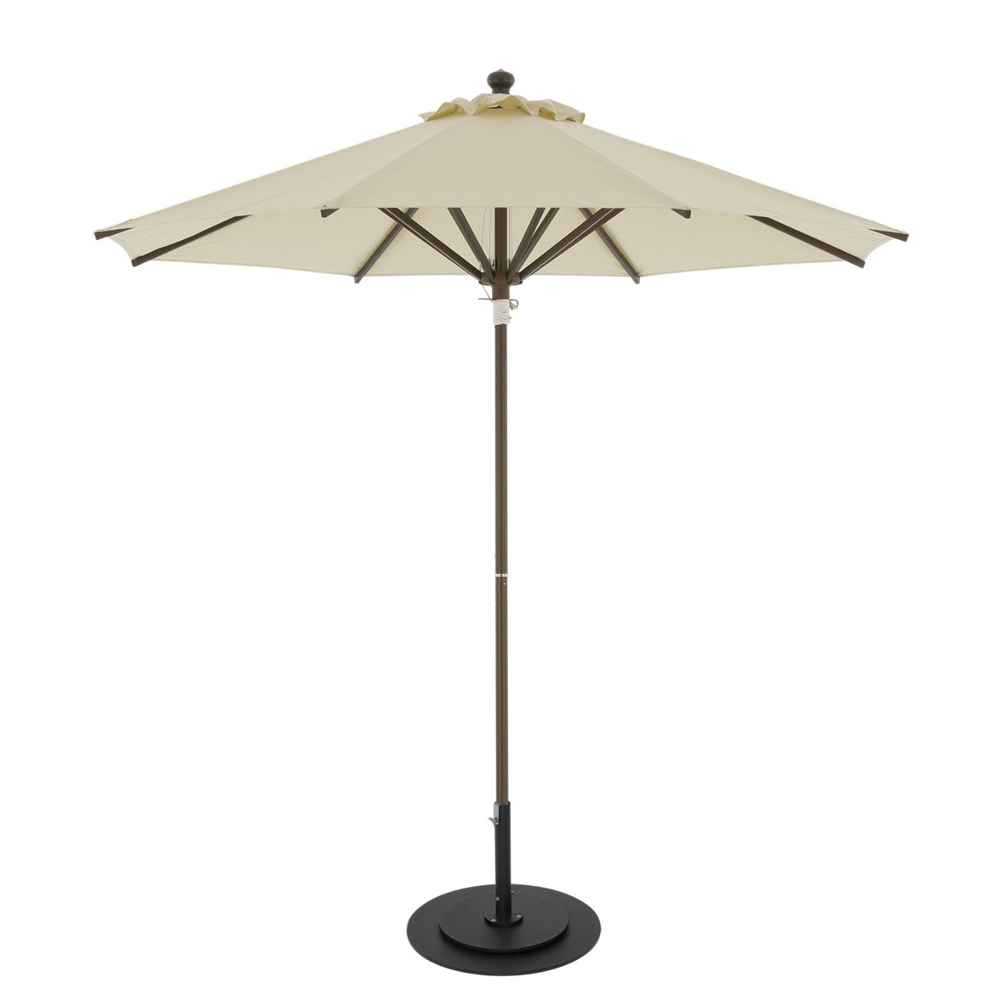

Made in Japan
Market Umbrella
使いやすさを追求つつ強度・耐候性・安全性を重視したスタンダードなモデルです。 職人が一本一本手作りしておりますので、生地の種類 / 天幕の仕様 / フレーム色などのフルカスタムや、破損時に部材単位での修理対応が可能です。
3 Sizes
| 品番 | サイズ | 総高 | 上代 |
|---|---|---|---|
| SY-2500 | 2,480φ | 2,610㎜ | ¥172,000～ |
| SY-2000 | 2,020φ | 2,400㎜ | ¥160,000～ |
| SY-2020 | 2,000×2,000 | 2,610㎜ | ¥170,000～ |